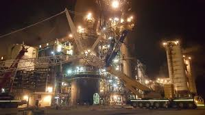
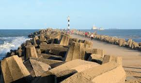
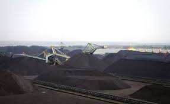
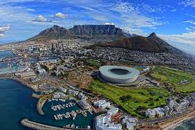
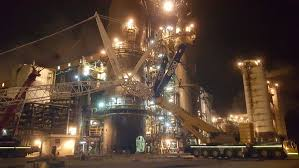
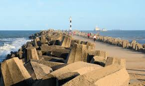
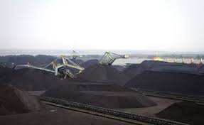
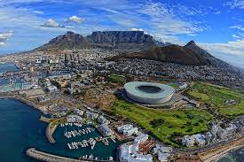

richards bay
kwazulu natal
Richards Bay This bay sits on KwaZulu-Natals fertile South Coast. Richards Bay was originally a holiday town but is now a well developed port. There are direct rail connections for mining exports, particularly coal. Birds are attracted to the area because of the abundance of fish and other sea creatures
 






